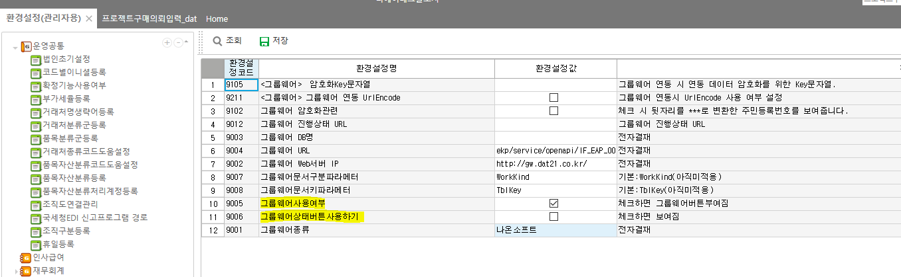

그룹웨어
파라미터 예시
-- 에이스
EXEC _SWCOMGroupWarePrint
@CompanySeq = 1 --
,@LanguageSeq = 1 --
,@UserSeq = 1 --
,@PgmSeq = 501568 -- 프로그램코드
,@WorkKind = 'ApprovalReq' -- 결재문서번호 (구매품의)
,@TblKey = 286 -- 내부코드
,@SiteInit = 'das' -- 사이트이니셜
-- 제뉴인
EXEC _SCOMGroupWarePrint
@CompanySeq = 1 -- 법인명
,@LanguageSeq = 1 -- 언어
,@UserSeq = 1 -- 로그인사용자
,@PgmSeq = 12820214 -- 프로그램코드
,@WorkKind = 'rot_TACCarDriving' -- 결재문서번호 (구매품의)
,@TblKey = 6 -- 내부코드
,@SiteInit = 'rot' -- 사이트이니셜
Ace : _SWCOMGroupWarePrint 1 , 1 , 1 , 63730042 , 'WkWorkBatch_sdng' , 6 , 'sdng'
제뉴인 : _SCOMGroupWarePrint 1 , 1 , 1 , 6820004 , 'POReq' , 373, 'dat'
GNI : exec SDAGroupWarePrint
@pWorkKind='frmTMEtcOutReq', -- 기타출고요청
@pTblKey='01202304120002',
@pLanguageID='0'
단암 :
begin tran
DECLARE @Status INT = 0,
@Results NVARCHAR(250) = ''
SELECT @Status = 0, @Results = ''
EXEC danam_SPRWkEmpOTHoliAppAfterCrt 1, 'E', 1, 1, '2313', @Status OUTPUT, @Results OUTPUT
select * from _TPRWkEmpDd where EMpSeq = 151 and Wkdate like '20240201%'
select * from _TPRWkEtcMng where EMpSeq = 151
rollback tran
환경설정(관리자용) - 그룹웨어 - 전자결재문서설정
키 값이 중요 - 결재문서번호 / (하단시트 - Seq컨트롤명)
대부분 출력 SP에 사이트 sp 넣어서 해줌
신규로 작성할 때 SP 마지막에 GWQuery 넣기 ( ex. ets_SPJTBOMApprovalReqGWQuery )
_SCOMGroupWarePrint => 제일 처음 수정하는 sp (사이트 내용 반영)
_SCOMGroupWareStatus => 후처리 sp 타게 할 수 있음
_SCOMGroupWareStart => 사이트 sp 타게 할 수 있음 (분기 나눠져있기 때문에 @WorkKind, @TblKey, @WorkingTag 잘봐야함

환경설정코드 : 9006 => 그룹웨어상태버튼
